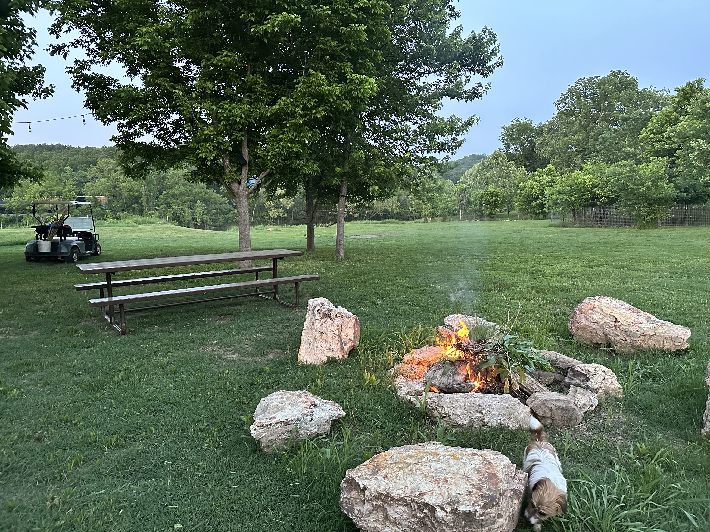
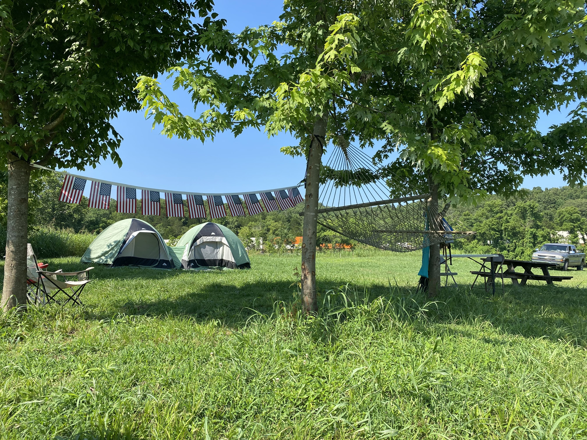
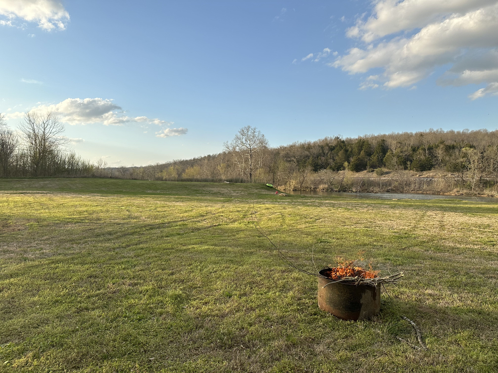
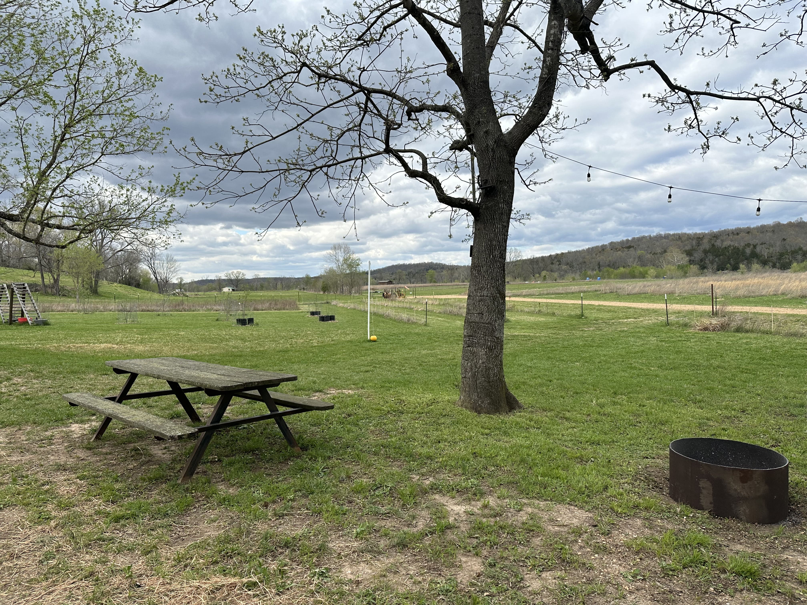

Riverside Campsite
A private spot along the Spring River, ideal for floating, fishing, and campfire evenings.
View & Book on AirbnbSpring River Country
Escape to the natural beauty of Spring River Country with our private riverside campsites — the perfect destination for everything from a relaxing weekend of floating, fishing, and campfires to family reunions, birthday celebrations, church retreats, and other group gatherings.

Guests can enjoy easy access to the Spring River and the surrounding Ozarks, with guided fishing trips and boat rentals available upon request to make your stay even more memorable.
Book directly on Airbnb, or contact Cydney for availability, group accommodations, and additional information.

A private spot along the Spring River, ideal for floating, fishing, and campfire evenings.
View & Book on Airbnb
Roomy enough for family reunions, birthday celebrations, and church retreats.
View & Book on Airbnb
Easy river access with the Ozarks as a backdrop — a quiet home base for your group.
View & Book on AirbnbPrefer to book directly, or planning a larger group? Guided fishing trips and boat rentals are also available on request — email Cydney or call (214) 763-0146.
Spring River Campsite Rentals offers riverside camping across Spring River Country, including Hardy, Ash Flat, Cherokee Village, Mammoth Spring, Salem, Thayer, Koshkonong, and surrounding communities in northern Arkansas and southern Missouri.